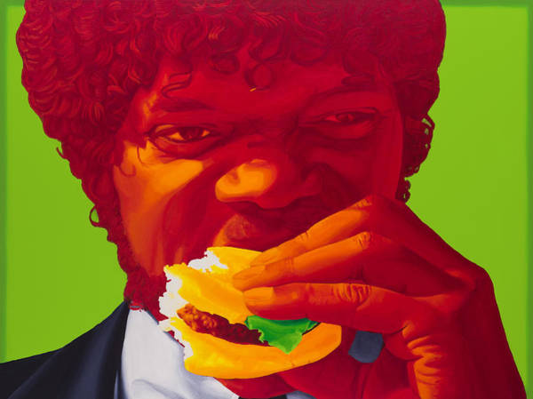

Royale With Cheese

Description
The Royale With Cheese. This Burger was made famous in the 1994 film, Pulp Fiction. Vincent describes to Jules that the metric system is used in Paris. Therefore, instead of naming a Mcdonald's burger a quarterpounder, it is called a "Royale With Cheese"
Ingredients
- 1/4 Lbs Ground Chuck Beef
- 1 Tsp Salt
- 1 Tsp Pepper
- 2 Slices Tomato
- 1 Slice Onion
- 2 Leaves Lettuce
- 2 Hamburger Buns
- 2 Slices Cheddar Cheese
Steps
- Grill 1/4 Lb Ground Chuck Beef at medium heat
- Add salt and pepper to each side while grilling
- Place beef patty on bun
- Place 2 cheedar cheese slice on patty
- Add lettuce on top of patty
- Toss tomato on lettuce
- Finally, add onion
- (Optional) Add ketchup, mustard, etc